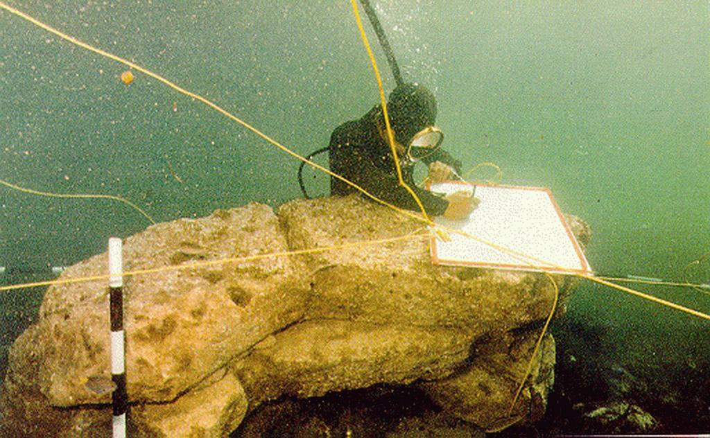
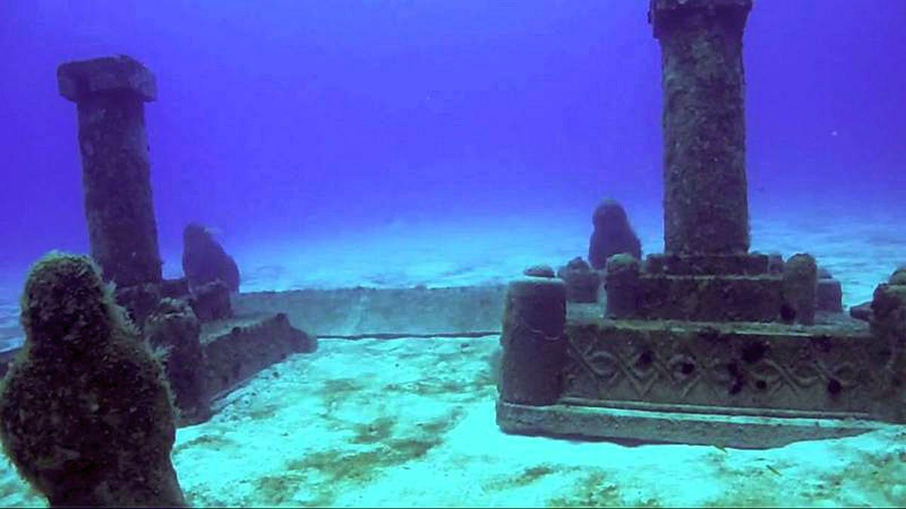
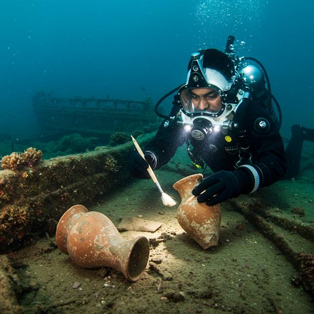

If Part 1 asked whether mythology can preserve history, Part 2 asks a far more difficult question: what exactly lies beneath the waters off Dwarka, and what does the archaeological evidence actually tell us?
When Archaeology Entered the Arabian Sea
The idea that Dwarka might exist beneath the ocean did not begin with divers searching for Krishna's kingdom. It began with a much simpler question.
Could the coastline described in ancient Indian literature still preserve traces of earlier settlements?
For decades after India's independence, archaeologists focused primarily on sites buried beneath deserts, forests, and agricultural land. Marine archaeology was still in its infancy. Unlike excavating an ancient temple or fort on land, working underwater required specialized diving equipment, sophisticated mapping techniques, and an entirely different understanding of geology.
The Arabian Sea, particularly along Gujarat's coastline, presented additional challenges. Strong tidal currents, constantly shifting sediments, poor underwater visibility, and centuries of marine erosion meant that any surviving archaeological remains would be difficult to locate and even harder to interpret.
Yet this coastline had always intrigued historians.
Ancient Greek, Roman, and Arab traders frequently described western India as one of the busiest maritime regions in the ancient world. Ports flourished here long before the Common Era, connecting the Indian subcontinent with Mesopotamia, Egypt, Persia, Oman, and East Africa.
If Krishna's Dwarka had any historical basis, this was exactly where one might expect to find it.
The Man Who Changed the Conversation
No discussion of underwater Dwarka is complete without mentioning Dr. S. R. Rao, one of India's most respected archaeologists and a pioneer of marine archaeology.
Dr. Rao had already earned international recognition for his work on the Indus Valley Civilization, particularly at the ancient port city of Lothal. His experience studying Harappan maritime trade made him uniquely qualified to investigate another coastal mystery.
Beginning in 1983, under the auspices of the National Institute of Oceanography in Goa, Dr. Rao led a series of underwater expeditions off the coast of present-day Dwarka and the nearby island of Bet Dwarka.
For nearly a decade, teams of divers meticulously surveyed the seabed.
Unlike treasure hunters searching for spectacular artifacts, archaeologists work patiently. Every stone must be measured. Every structure mapped. Every object documented in relation to its surroundings. Context is often more valuable than the artifact itself.
As the surveys progressed, something unexpected began to emerge from beneath layers of sand and marine growth.
The seabed was not empty.
Stones That Refused to Behave Like Nature

One of the earliest discoveries consisted of large, dressed stone blocks scattered across the ocean floor.
At first glance, stones underwater are hardly unusual. The sea is full of rocks.
What caught the archaeologists' attention was not their presence but their characteristics.
Many blocks had remarkably regular dimensions. Several displayed smooth faces that appeared intentionally cut rather than naturally fractured. Others contained dowel holes—small cylindrical cavities typically used to secure adjoining stones using wooden or metal pegs.
Such features are difficult to explain through natural geological processes alone.
Some stones appeared arranged in linear alignments. Others formed angular junctions. Instead of random boulder fields created by erosion, divers documented patterns suggestive of foundations, walls, and built structures.
Measurements taken during successive expeditions revealed blocks often approaching one metre in length, with proportions that remained surprisingly consistent across multiple locations.
A City Hidden Beneath the Waves?
As mapping continued, researchers identified what appeared to be the remains of extensive architectural features.
- Rectangular structural foundations
- Semi-circular formations interpreted as defensive walls
- Stone alignments resembling jetties or harbour installations
- Large platform-like constructions
- Extensive masonry distributed across multiple underwater zones
Some features extended for hundreds of metres. Others appeared connected through planned orientations rather than random distribution.
Dr. Rao argued that these represented components of an organized urban settlement rather than isolated buildings.
His interpretation was bold.
He suggested that the submerged remains corresponded remarkably well with descriptions of Dwarka found in ancient Sanskrit texts.
Not everyone agreed.
But regardless of interpretation, one fact became increasingly difficult to dismiss.
Human beings had unquestionably been active here.
The question was no longer whether people had occupied the area. The real debate became when, how extensively, and whether these remains belonged to the Dwarka described in the Mahabharata.
The Discovery That Changed Everything: Stone Anchors

If the stone walls sparked curiosity, another discovery dramatically strengthened the case for ancient maritime activity.
The divers began recovering stone anchors.
Lots of them.
Over the course of multiple expeditions, archaeologists documented well over one hundred anchors of varying designs.
To someone unfamiliar with maritime archaeology, this might sound unremarkable. Ancient ships needed anchors. Why should this matter?
Because anchors are surprisingly informative. Just as archaeologists can estimate the age of a civilization from pottery styles, maritime historians can often identify trading traditions from anchor designs.
Several of the Dwarka anchors featured the classic triangular three-holed design.
These were not unique to India.
- Oman
- Bahrain (ancient Dilmun)
- The Persian Gulf
- The eastern Mediterranean
- Red Sea trading ports
These anchors are widely associated with Bronze Age maritime commerce. Their presence suggests something important.
Merchant vessels travelling across the Arabian Sea required substantial harbour infrastructure. A port capable of accommodating such ships would naturally include quays, docking facilities, warehouses, and coastal defenses.
Suddenly, the literary descriptions of Dwarka as a thriving maritime capital no longer seemed entirely disconnected from archaeology.
Pottery, Tools, and Everyday Life

Cities are rarely identified by monumental architecture alone.
The true fingerprints of civilization often lie in ordinary objects.
- Pottery fragments
- Beads
- Copper objects
- Fish hooks
- Stone tools
- Structural fragments
- Inscribed materials
Many pottery styles showed similarities to the Late Harappan cultural tradition, suggesting that parts of the region had been occupied during or shortly after the decline of the Indus Valley Civilization.
This is significant because western India already possessed a rich maritime tradition long before the periods traditionally associated with Krishna.
Ports such as Lothal, Dholavira, and others demonstrate that sophisticated coastal trade networks flourished in Gujarat thousands of years ago.
Therefore, discovering another ancient port along this coastline should not surprise historians.
The real challenge lies in identifying which ancient settlement these remains represent.
The Dating Problem
One of the biggest misconceptions surrounding Dwarka is the belief that archaeologists have established a single definitive age for the underwater ruins.
They have not.
Dating underwater sites is extraordinarily difficult. Unlike buildings preserved beneath dry soil, submerged settlements are repeatedly disturbed by ocean currents, sediment movement, biological activity, storms, human fishing operations, and later occupations.
Objects from different historical periods can become mixed together.
As a result, radiocarbon dating performed on associated materials has produced a range of dates rather than one definitive answer. Some findings suggest occupation stretching back several thousand years. Other artifacts belong to considerably later periods.
This has led many archaeologists to propose that the Dwarka coastline experienced repeated cycles of settlement, destruction, rebuilding, and renewed occupation.
Rather than one city frozen in time, the archaeological record may represent an evolving coastal landscape inhabited across many centuries.
That possibility actually aligns with what we know about major port cities throughout history.
Reading the Seafloor
Underwater archaeology is often misunderstood because people imagine divers simply spotting ancient ruins lying exposed on the seabed.
Reality is far less dramatic.
Much of an ancient city can remain hidden beneath layers of marine sediment. Researchers therefore rely heavily on remote sensing technologies.
- Side-scan sonar to image the seafloor
- Echo sounding to map underwater topography
- Magnetometers to detect buried anomalies
- Underwater photography
- Detailed photogrammetric mapping
These technologies revealed that the submerged landscape extends well beyond what divers can immediately observe. Some apparent structures remain partially buried. Others may yet await excavation beneath accumulated sediments.
This is one reason the debate continues. Every new survey adds information, but rarely delivers a final answer.
Archaeology rarely works through dramatic revelations. Instead, it advances one careful measurement at a time.
Could the Sea Really Swallow an Entire City?
Perhaps the most striking aspect of the Dwarka narrative is not the existence of a coastal city. It is its disappearance.
Modern readers often imagine cities as permanent. Geology disagrees.
Earth's coastlines are among its most dynamic environments. Since the end of the last Ice Age approximately 20,000 years ago, global sea levels have risen by nearly 120 metres. Entire coastlines vanished worldwide. River mouths shifted. Islands formed. Low-lying settlements disappeared beneath advancing oceans.
Gujarat occupies one of India's most tectonically active regions. The area lies close to major fault systems capable of producing devastating earthquakes. The 2001 Bhuj earthquake, which claimed more than 20,000 lives, offered a sobering reminder that the landscape continues to change even today.
- Gradual sea-level rise
- Coastal erosion
- Land subsidence caused by tectonic activity
- Earthquake-induced ground failure
- Tsunamis generated within the Arabian Sea
- Repeated storm surges
None of these mechanisms are extraordinary. Collectively, they have reshaped coastlines across the world.
Dr. Rao himself proposed that a sudden marine event—possibly associated with tectonic activity—may have contributed to the destruction of the ancient settlement.
Whether that interpretation proves correct remains debated. But the underlying geological possibility is entirely plausible.
Ancient cities do disappear beneath the sea. History has shown us that many times before.
The Evidence Speaks—But Not With One Voice
At this point, two very different narratives begin to emerge.
One sees the submerged structures as compelling evidence that the Mahabharata preserved the memory of Krishna's historical capital.
The other argues that while the discoveries unquestionably represent ancient human activity, connecting them directly to Krishna stretches the available evidence beyond what archaeology can currently demonstrate.
This tension is not a weakness. It is precisely what makes Dwarka one of the most fascinating archaeological mysteries in the world.
And sometimes, the hardest part of archaeology is not uncovering the past. It is learning how much certainty the evidence truly allows.
The file remains open.